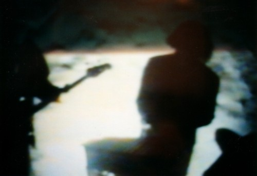

- Gore Story
- Why changes still remain
- Founding BOHREN members Thorsten Benning (drums), Robin Rodenberg (Bass), Reiner Henseleit (guitar), Morten Gass (guitar/piano) started playing music together in 1988. They were friends from school and they shared a common taste for all kinds of extreme music like Grindcore, Hardcore, Death or Doom Metal.
- Driven by the idea of a more unique style of music, they formed BOHREN (german word for drilling) in 1992 to play, as they called it, “doom ridden jazz music”.
- 1993 the band released a 7” e.p. for Suggestion Records. 1993 also the band expand their name to BOHREN & DER CLUB OF GORE, as a link to the dutch instrumental band GORE, which inspired BOHREN to play instrumental music.
- 1994 followed the longplayers GORE MOTEL and the double set MIDNIGHT RADIO (1995), both on Epistrophy Records, where Bohren introduces its musical vision between slow jazz ballads and doom guitars.
- 1996 Reiner Henseleit left the band and the guitar disappeared out of the BOHREN Music.
- 1997 Christoph Clöser, a cologned-based composer and musician (saxophone, piano) joined the band and in the cast T. Benning (drums), C. Clöser (saxophone), M. Gass (Fender Rhodes), R. Rodenberg (bass), which still exist till today, the band released SUNSET MISSION (2000), a “slow but nonetheless melodious blend of Saxophone, Fender Rhodes, Bass and Drums” on the Hamburg-based label WONDER.
- 2002 BOHREN released BLACK EARTH where the band tried to expand the possibilities of new avenues explored in SUNSET MISSION, followed by the subsequent conceptual CD GEISTERFAUST (2005). GEISTERFAUST carries the principles of reduction and compression to extremes and at the same time it is a bandexperiment in new “tone colours” (Tuba, Bass-Trombone, Vibraphone, choir). Both CD`s are released on WONDER.
- In autumn 2008 the CD DOLORES appeared on the belgian label PIAS (worldwide) and IPECAC (U.S.A. and Canada).